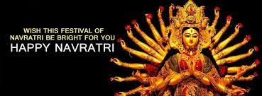

Durgapuja in India
Durga Puja (ISO: Durgā Pūjā), also known as Durgotsava or Shaaradotsava, is an annual festival originating in the Indian subcontinent which reveres and pays homage to the Hindu goddess Durga, and is also celebrated because of Durga's victory over Mahishasura.[8][9] It is particularly celebrated in the Indian state of West Bengal and other states like Tripura, Bihar, Jharkhand, eastern Uttar Pradesh, Assam, Odisha and by Hindus in Bangladesh.[5][6][10][11] The festival is observed in the Indian calendar in the month of Ashvin, which corresponds to September–October in the Gregorian calendar.[12][13] Durga Puja is a ten-day festival,[14][8] of which the last five are of the most significance.[15][13] The puja is performed in homes and public, the latter featuring a temporary stage and structural decorations (known as pandals). The festival is also marked by scripture recitations, performance arts, revelry, gift-giving, family visits, feasting, and public processions called a melā.[8][16][17] Durga Puja is an important festival in the Shaktism tradition of Hinduism.[18][19][20] Durga Puja in Kolkata has been inscribed on the intangible cultural heritage list of UNESCO in December 2021.[21]
As per Hindu scriptures, the festival marks the victory of goddess Durga in her battle against the shape-shifting Demon, Mahishasura.[22][23][A] Thus, the festival epitomizes the victory of good over evil, though it is also in part a harvest festival celebrating the goddess as the motherly power behind all of life and creation.[25][26] Durga Puja coincides with Navaratri and Dussehra celebrations observed by other traditions of Hinduism.[27][28][29]
The primary goddess revered during Durga Puja is Durga, but celebrations also include other major deities of Hinduism such as Lakshmi (the goddess of wealth and prosperity), Saraswati (the goddess of knowledge and music), Ganesha (the god of good beginnings), and Kartikeya (the god of war). In Bengali traditions, these deities are considered to be Durga's children, and Durga Puja is believed to commemorate Durga's visit to her natal home with her beloved children. The festival is preceded by Mahalaya, which is believed to mark the start of Durga's journey to her natal home. Primary celebrations begin on the sixth day (Shasthi), on which the goddess is welcomed with rituals. The festival ends on the tenth day (Vijaya Dashami), when devotees embark on a procession carrying the worshipped clay sculpture-idols to a river, or other water bodies, and immerse them, symbolic of her return to the divine cosmos and her marital home with Shiva in Kailash. Regional and community variations in celebration of the festival and rituals observed exist.
Durga Puja is an old tradition of Hinduism,[30] though its exact origins are unclear. Surviving manuscripts from the 14th-century provide guidelines for Durga Puja, while historical records suggest that royalty and wealthy families were sponsoring major Durga Puja festivities since at least the 16th-century.[31][self-published source?][18] The prominence of Durga Puja increased during the British Raj in the provinces of Bengal, Bihar, Jharkhand, eastern Uttar Pradesh, Odisha and Assam.[32][9] However, in modern times, the importance of Durga Puja is more as a social and cultural festival than a religious one, wherever it is observed. [citation needed] Over the years, Durga Puja has morphed into an inseparable part of Indian culture with a diverse group of people celebrating this festival in their unique way while on tradition.[9]
Copyright ©2023. All Rights Reserved